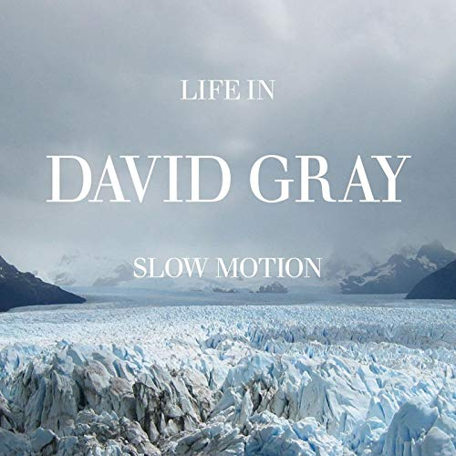
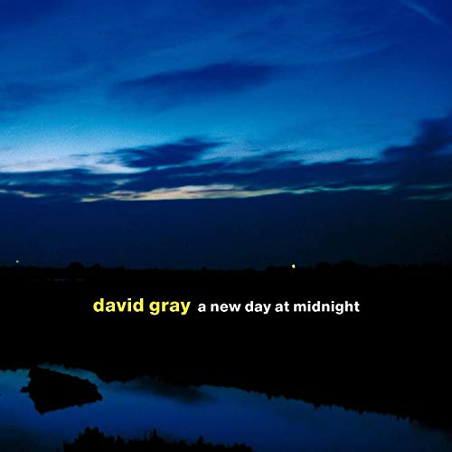
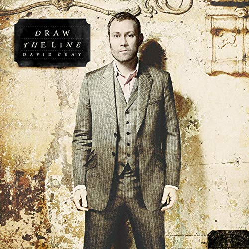

Music




British singer-songwriter David Gray released his first album in 1993 and received worldwide attention after the release of White Ladder six years later. It was the first of three UK chart-toppers in six years for Gray, of which the latter two also made the Top 17 in the United States. White Ladder became the fifth best-selling album of the 2000s in the UK. It is ranked the tenth best-selling album of the 21st century in the United Kingdom. Gray has been nominated for four Brit Awards – twice for Best British Male.
Gray's first two albums, A Century Ends and Flesh, were issued in 1993 and 1994 respectively and led to Gray becoming popular in folk-rock circles. In 1996 Gray released his third album, Sell, Sell, Sell. Despite critical acclaim, the album did not chart, but the song "Late Night Radio" received airplay on alternative UK radio stations.
The re-release of Gray's fourth record album, White Ladder, in 2000 on ATO Records, brought him commercial success and critical attention. While his first three albums featured acoustic folk songs and guitar-based alternative rock, White Ladder introduced his now-trademark folktronic sound. The album included his best-known songs: "This Year's Love", "Babylon", "Please Forgive Me" and "Sail Away". White Ladder was originally released on Gray's own label IHT Records in November 1998. After its re-release, in June 2000, "Babylon" hit No. 5 in the UK Singles Chart; it remains his biggest UK hit to date.
The album was No. 1 on the UK Albums Chart, two years and five months after its original release, spending a total of 151 weeks on the chart. Aside from "Please Forgive Me", which charted at No. 72 on the UK Singles Chart, all other single releases charted within the Top 20; the re-released "Please Forgive Me" charted at number 18, and "Say Hello, Wave Goodbye" and "Sail Away" peaked at number 26.
The year 2001 also saw the release of a rarities compilation of Gray's early works, The EPs 1992-1994, as well as an album of newly-recorded previously unreleased songs, Lost Songs 95-98, both of which followed White Ladder into the Top 20 in the UK Albums Chart.
In November 2002, Gray released the follow-up to White Ladder, entitled A New Day at Midnight. The new release did not receive the same critical acclaim as its predecessor, but still went straight in at number 1, selling nearly 150,000 copies in its first week of release. It went on to achieve platinum status within a year, eventually being certified four times platinum overall, and was the second-biggest selling album by a UK artist in 2002.
After a three-year hiatus which saw him wind down his recording and touring schedule due to exhaustion, Gray returned with his seventh album, Life in Slow Motion, in September 2005. Like its predecessor, it topped the UK Albums Chart in its first week of release.
In March 2007, Gray released the compilation album Shine: The Best of the Early Years. On 7 July 2007, Gray performed with Damien Rice at the UK leg of Live Earth at Wembley Stadium in London.
A new album, entitled Draw the Line, was be released on 14 September 2009 in the UK and on 22 September in the United States. The album features guest appearances by Annie Lennox and Jolie Holland. The album's first single, "Fugitive", was released on 7 September 2009, coinciding with the start of an expansive world tour.
Foundling was released in August 2010, a double album: the first CD consists of 11 new songs and the second consists of eight previously unreleased songs. A ninth previously unreleased song is included when Foundling is ordered through the iTunes store. His 10th studio album, Mutineers in 2014, was his first in four years.
Gray released the compilation The Best of David Gray, on CD, double CD and LP in October 2016, featuring a selection of tracks from his back catalogue as well as two new recordings. The album, released in conjunction with IHT Records, has already been released as a dynamic playlist on Spotify that automatically changes shape every Monday.
In 2019 he announced his White Ladder 20th Anniversary tour for 2020.